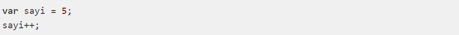

.gif) Ders 8: Olaylar(Events)
Ders 8: Olaylar(Events)
Aritmetik işlemlerde kullanılan sayılar işlenen (operand) olarak adlandırılırlar.
Sayılar üzerinde yapılacak işlem operatör tarafından tanımlanır: 10 + 5 işleminde + bir operatördür.
JavaScript'te toplama operatörü + işaretidir.
Örnek

JavaScript programlama dilinde çıkartma operatörü - işaretidir.

JavaScript programlama dilinde çarpma operatörü * işaretidir.

JavaScript programlama dilinde mod alma operatörü % işaretidir. Mod alma, bölme işleminde kalanın bulunmasıdır:

JavaScript programlama dilinde ++ sayıyı arttırmak için kullanılır:

JavaScript programlama dilinde -- sayıyı azaltma için kullanılır:

JavaScript Operatör Önceliği
Operatör önceliği, aritmetik işlemde hangi operatörün önce işletileceğini ifade eder.
Geleneksel matematikte olduğu gibi önce çarpma işlemi yapılır.
Çarpma (*) ve bölme (/) toplama (+) ve çıkartmadan (-) daha önceliklidir.
öncelik sırası parantez ile değiştirilebilir:
Parantez kullanıldığında öncelikli olarak parantez içindeki işlem gerçekleşir.
Eğer işlem öncelikleri aynıysa, işlemler soldan sağa doğru yapılır: